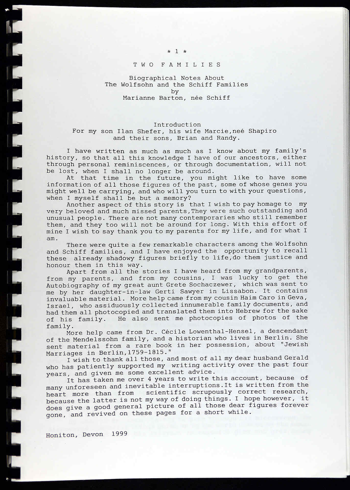

For my son Ilan Shefer, his wife Marciene Shapiro and their sons, Brian and Randy.
I have written as much as I know about my family's history, so that all this knowledge I have of our ancestors, either through personal reminiscences, or through documentation, will not be lost, when I shall no longer be around.
At that time in the future, you might like to have some information of all those figures of the past, some of whose genes you might well be carrying, and who will you turn to with your questions, when I myself shall be but a memory?
Apart from all the stories I have heard from my grandparents, from my parents, and from my cousins, I was lucky to get the Autobiography of my great-aunt Grete Sochaczewer, which was sent to me by her daughter-in-law Gerti Sawyer in Lisbon. It contains invaluable material. More help came from my cousin Haim Caro in Geva, Israel, who assiduously collected innumerable family documents, and had them all photocopied and translated them into Hebrew for the sake of his family.
More help came from Dr. Cécile Lowenthal-Hensel, a descendant of the Mendelssohn family, and a historian who lives in Berlin. She sent material from a rare book in her possession, about Jewish Marriages in Berlin, 1759–1815.
Honiton, Devon · 1999
